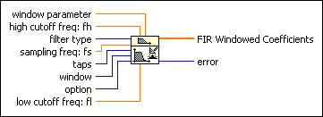
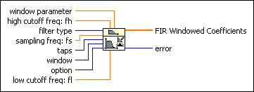

FIR Windowed Coefficients VI
Owning Palette: Advanced FIR Filtering VIs
Requires: Full Development System
Generates the set of filter coefficients you need to implement an FIR windowed filter.

 Add to the block diagram Add to the block diagram |
 Find on the palette Find on the palette |
Owning Palette: Advanced FIR Filtering VIs
Requires: Full Development System
Generates the set of filter coefficients you need to implement an FIR windowed filter.

| Add to the block diagram |
Find on the palette |
 |
window parameter is the beta parameter for a Kaiser window, the standard deviation for a Gaussian window, and the ratio, s, of the main lobe to the side lobe for a Dolph-Chebyshev window. If window is any other window, this VI ignores this input. The default value of window parameter is NaN, which sets beta to 0 for a Kaiser window, the standard deviation to 0.2 for a Gaussian window, and s to 60 for a Dolph-Chebyshev window. |
||||||||||||||||||||||||||||||||||||||
|
high cutoff freq: fh is the high cutoff frequency in Hz. The default is 0.45 Hz. The VI ignores this parameter when filter type is 0 (Lowpass) or 1 (Highpass). When filter type is 2 (Bandpass) or 3 (Bandstop), high cutoff freq: fh must be greater than low cutoff freq: fl and observe the Nyquist criterion. | ||||||||||||||||||||||||||||||||||||||
 |
filter type specifies the passband of the filter.
|
||||||||||||||||||||||||||||||||||||||
|
sampling freq: fs is the sampling frequency in Hz and must be greater than zero. The default is 1.0 Hz. If it is less than or equal to zero, the VI sets FIR Windowed Coefficients to an empty array and returns an error. | ||||||||||||||||||||||||||||||||||||||
 |
taps determines the total number of FIR coefficients and must be greater than zero. The default is 25. If taps is less than or equal to 0, the VI sets FIR Windowed Coefficients to an empty array and returns an error. taps must be odd for highpass and bandstop filters. | ||||||||||||||||||||||||||||||||||||||
 |
window specifies the type of smoothing window. Smoothing windows decrease ripple in the filter passband and improve the ability of the filter to attenuate frequency components in the filter stopband.
|
||||||||||||||||||||||||||||||||||||||
|
option specifies whether to scale the FIR Windowed Coefficients. The default is 0.
|
||||||||||||||||||||||||||||||||||||||
|
low cutoff freq: fl is the low cutoff frequency in Hz and must be greater than zero and observe the Nyquist criterion. The default is 0.125 Hz. If low cutoff freq : fl is less than or equal to zero or does not meet the Nyquist criterion, the VI sets FIR Windowed Coefficients to an empty array and returns an error. | ||||||||||||||||||||||||||||||||||||||
 |
FIR Windowed Coefficients returns the filter coefficients. | ||||||||||||||||||||||||||||||||||||||
 |
error returns any error or warning from the VI. You can wire error to the Error Cluster From Error Code VI to convert the error code or warning into an error cluster. |
The values for high cutoff freq: fh and low cutoff freq: fl must observe the following relationship.
0 < f1 < f2 < 0.5fs
where f1 is low cutoff freq: fl, f2 is high cutoff freq: fh, and fs is sampling freq: fs. If any of these conditions are not met, the VI sets FIR Windowed Coefficients to an empty array and returns an error.